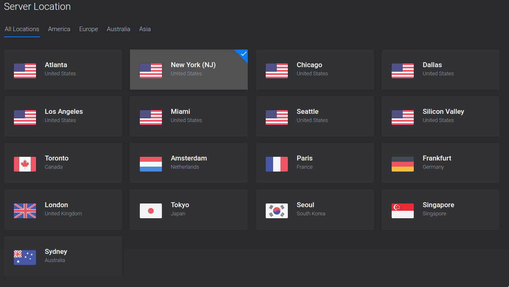
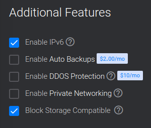

Once you have a domain name, you'll need a server to host all your website files on. In general, a server is just a computer that is constanly broadcasting some services on the internet.
Servers connected to the internet can be extremely useful with or without proper websites attached to them. You can be your own website, email, file-sharing service and much more.
Getting a VPS
A Virtual Personal Server (VPS) is a very cheap and easy way to get a web server. Without you having to buy expensive equipment. There are a lot of online businesses that have massive server farms with great internet connection and big power bills that allow you to rent a VPS in that farm for pocket change.
A VPS usually costs $5 a month. Sometimes slightly more, sometimes slightly less. That's a good price for some internet real-estate, but in truth, you can host a huge number of websites and services on a single VPS, so you get a lot more. I might have a dozen websites, an email server, a chat server and a file-sharing services on one VPS.
The VPS provider that I'll be using for this guide is Vultr, since that is what I use. Vultr provides a free one-month $100 credit to anyone who starts an account through this referral link of mine so you can play around with their services with impunity.
Starting your server in two minutes or less
Start an account on Vultr and let's get started.
Vultr (and other VPS providers) usually give you a choice in where and what exactly your VPS is.
Server Location
In general, it doesn't hugely matter what physical location you have your server in. You might theoretically want it close to where you or your audience might be, but if you host a server in Singapore for an American audience, they won't have to be waiting a perceptibly longer time to load the site.
Some locations might have different abilities and plans than others. For example, in Vultr, their New York location has optional DDOS protection and also has some cheaper $3.50 servers.
Operating System/Server Type

I especially recommend Debian 10 for an operating system for your server. Debian is the "classic" server OS and as such, I make my guides on this site for Debian 10. If you use another OS, just know that your millage may vary in terms of you might need to change some instructions here minorly.
Server size

You finally have a choice in how beefy a server you want. On Vultr, I recommend getting the cheapest option that is not IPv6 only.
Web hosting and even moderately complicated sites do not use huge amounts of RAM or CPU power. If you start doing more intensive stuff than hosting some webpages and an email server and such, you can always bump up your plan on Vultr without data loss (it's not so easy to bump down).
Additional features
On Vultr, there are some final checkboxes you can select additional options. You will want to check Enable IPv6 and also Block Storage Compatible.
We will be setting up IPv6 because it's important for future-proofing your website as more of the web moves to the IPv6 protocol. Block storage is the ability (if you want) to later rent large storage disks to connect to your VPS if desired. You just might want that as an option, so it's worth activating now.
Done!
Once you select those settings, your server will automatically be deployed. Momentarily, you will be able to see your server's IP addresses which will be used for the next brief step:
Previous: Get a domain name. Next: Connect Your Domain and Server.More info
VPS vs. Self-hosting
It is very possible instead of using a VPS, hooking up an old computer to the internet and attempting to host a website from that. That can be a valid option if you can do it if you have a great internet connection and can do so without draining your power bill. I don't recommend it because I don't (and can't) do it given my bandwidth needs. For newbs, there are also some extra steps you have to take care of with DNS and setting up static IPs and such.
I might write a guide on this in the future, but I don't do it myself.
Backups
Vultr and other VPS providers often provide the ability to make backup snapshots of your server in case of dataloss or their own error.
Backups on Vultr are free right now.
When we learn how to use rsync, I will recommend you to also keep your own backup of your site, or at least an offline version of it.
There's a low chance of their whole system collapsing or something, but I say it's a good idea to be hyper-precautious.